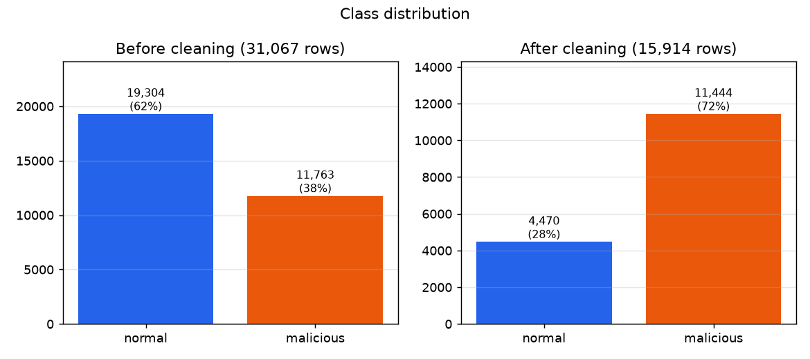
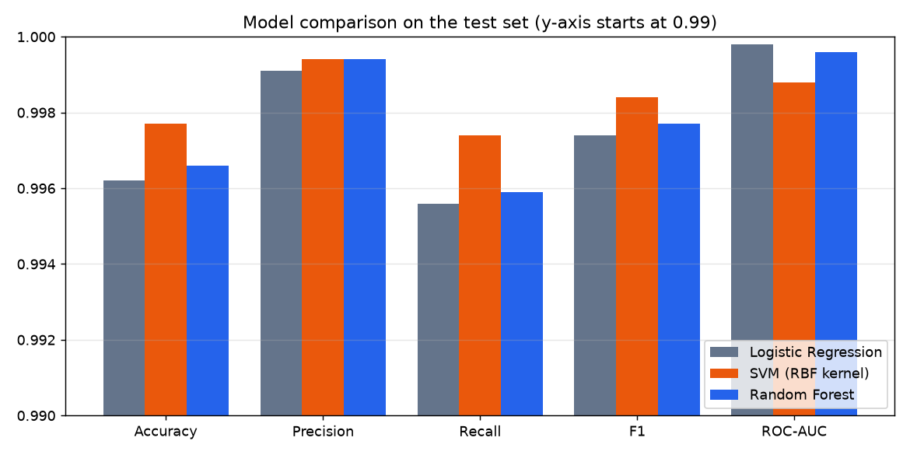
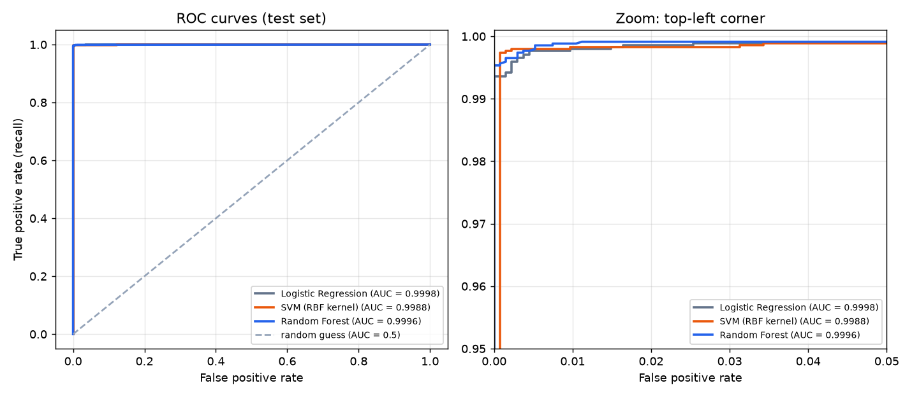
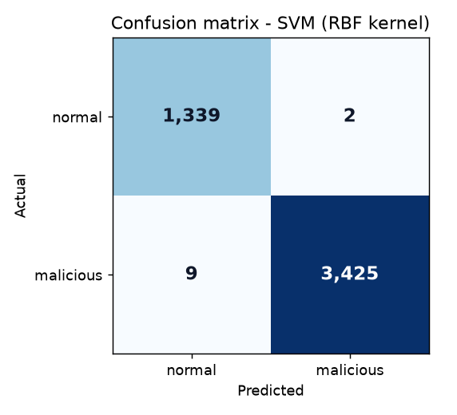

CART-ML — Detecting malicious HTTP requests with machine learning
Comparison of Logistic Regression, SVM and Random Forest on a real public dataset,
with a small security scanner as a practical application.
Generated 2026-11-22 13:09:59
Research question. Can supervised machine-learning models detect malicious HTTP request parameters (SQLi, XSS, command injection, path traversal), and which of Logistic Regression, SVM and Random Forest performs best?
1. Dataset
Real, public dataset: HTTP Params Dataset (Morzeux) - benign values from CSIC 2010; MIT licence
· source. Each row is one HTTP parameter value labelled
normal or malicious; every value is turned into 18 numeric features
(length, special characters, quotes, SQL/XSS/command keywords, traversal patterns, entropy ...).
31,067
Rows (raw)
15,914
Rows after cleaning
4,470
Normal
11,444
Malicious
18
Features
11,139 / 4,775
Train / test
Data cleaning (leakage check)
The models only see the 18 features. Two different payloads can give the exact same
feature vector; if one copy is in the training set and the other in the test set, the test is no
longer on unseen data and the score is inflated. So duplicates are removed before splitting.
Step
Rows
Raw dataset
31,067
Duplicate payload strings removed
0
Contradictory rows removed (same features, both labels)
34
Duplicate feature vectors removed
15,119
Clean dataset used for every model
15,914
2. Exploratory data analysis

After cleaning, the data is imbalanced (about 72%
malicious). That is why we report Precision, Recall, F1 and ROC-AUC, not only Accuracy, and use a
stratified split that keeps the same ratio in train and test.
Each model is tuned with GridSearchCV: every combination is scored with
5-fold cross-validation (F1) on the training set only; the test set is never used for tuning.
Logistic Regression
Why this algorithm: Simplest linear classifier: the baseline every other model must beat. Fast, and its weights are easy to interpret.
Hyperparameter
Values searched
Best
Meaning
C
0.01, 0.1, 1, 10, 100, 1000, 10000, 100000
10000
Inverse regularisation strength. Small C = simpler model (less over-fitting), large C = fits the training data more closely. Searched 0.01 to 100,000.
class_weight
None, balanced
None
'balanced' gives the smaller class more weight. Tested because the cleaned data is 72% malicious / 28% normal.
max_iter
fixed
—
2000 (fixed) so the optimiser always converges.
StandardScaler
fixed
—
Features are scaled to mean 0 / std 1 first, because length (~100) and ratios (0-1) live on very different scales.
✓ Every best value lies inside the searched range.
SVM (RBF kernel)
Why this algorithm: Support Vector Machines are among the most used algorithms in web-attack detection papers. The RBF kernel draws a non-linear boundary between normal and malicious.
Hyperparameter
Values searched
Best
Meaning
C
0.1, 1, 10, 100, 1000
100
Penalty for misclassified training points. Large C = fewer training errors but a risk of over-fitting. Searched 0.1 to 1000.
gamma
scale, 0.01, 0.1, 1, 10
1
How far the influence of one training point reaches. 'scale' = 1/(n_features*var). Searched 'scale', 0.01, 0.1, 1, 10.
kernel
fixed
—
'rbf' (fixed): allows a curved decision boundary.
StandardScaler
fixed
—
Required: SVM uses distances, so unscaled features would dominate.
✓ Every best value lies inside the searched range.
Random Forest
Why this algorithm: Many decision trees vote together. Handles non-linear patterns, needs no scaling and resists over-fitting.
Hyperparameter
Values searched
Best
Meaning
n_estimators
100, 200, 400
200
Number of trees. More trees = more stable votes, slower. Searched 100/200/400.
max_depth
8, 16, None
None
Maximum depth of each tree. Limits how specific a tree can get (None = no limit, the natural upper end). Searched 8/16/None.
min_samples_leaf
1, 3
1
Minimum rows in a leaf (1 is the smallest possible). 3 smooths the trees and reduces over-fitting. Searched 1/3.
scaling
fixed
—
Not needed: trees split on thresholds, so feature scale does not matter.
✓ Every best value lies inside the searched range or at a natural limit that cannot go further (max_depth, min_samples_leaf).
4. Results
Test set (tuned models)
Model
Accuracy
Precision
Recall
F1
ROC-AUC
CV F1 (train)
Fit time
Logistic Regression
0.9962
0.9991
0.9956
0.9974
0.9998
0.9976 ± 0.0006
0.03s
SVM (RBF kernel) ★
0.9977
0.9994
0.9974
0.9984
0.9988
0.9984 ± 0.0005
0.76s
Random Forest
0.9966
0.9994
0.9959
0.9977
0.9996
0.9972 ± 0.0005
0.72s
Which model do we choose?
All three models reach a test F1 between 0.9974 and 0.9984, so accuracy alone does not separate them. We therefore choose by 5-fold cross-validation F1 on the training set: SVM (RBF kernel) (0.9984). If training speed mattered more, Logistic Regression trains fastest (0.03s) with almost the same score. Choosing by cross-validation rather than by the test score keeps the
test set a fair, untouched judge. (★ = selected model.)


Default vs tuned hyperparameters (test set F1)
Model
Default
Tuned
Change
Logistic Regression
0.9952
0.9974
+0.0022
SVM (RBF kernel)
0.9955
0.9984
+0.0029
Random Forest
0.9977
0.9977
+0.0
Selected model: confusion matrix
SVM (RBF kernel) on 4,775 test rows: TP=3,425 · TN=1,339
· FP=2 (normal flagged as attack) · FN=9 (attack missed).

Limitations
The three models are very close. Test F1 ranges from 0.9974 to 0.9984; the differences
are about the size of one standard deviation in cross-validation, so the ranking could change with
another split.
The dataset is an easy benchmark. Attacks differ sharply from normal values (see the box
plots), so very high scores are expected. Results on real, messier traffic would be lower.
Imbalanced attack types. SQL injection is 10,569 rows,
command injection only 73; the model learns the rare
types from few examples.
Hand-made features. The 18 features encode known attack signs; a new attack style that
does not use them may not be detected.
Future work
Learned features: train on the raw text (e.g. TF-IDF of character n-grams) so the model
learns attack patterns by itself, and compare with the 18 hand-made features.
ML firewall: place the trained model in front of the lab websites as a web application
firewall (WAF) and measure how many of the scanner's attacks it blocks.
The practical application. A rule-based scanner attacks 4 small local websites with the same three attack families the ML model learned (SQL injection, XSS, path traversal). A vulnerability is only reported after it is proven with a harmless canary; then the fix is switched on and the same proof is re-tested. As a small demonstration, the ML check row shows how the trained model classifies the attack payload.
F02 — SQL injection in login form (authentication bypass)
CRITICAL · CVSS 9.8fixed on retest
1Discover
POST /login · param username
Probe payload: ' OR 1=1 --
2Prove
Proof: Invalid login returned HTTP 401; payload returned HTTP 302 and a session cookie. Home page then says 'Signed in as admin' without any password.
Reproduce:POST /login username=' OR 1=1 --&password=x
3Impact
Anyone can log in as any user, including the administrator, without a password.
CWE-89 · A03:2021 Injection
4Remediate
knowledge-base Use parameterised queries (placeholders) instead of building SQL with string formatting. Hash passwords (bcrypt/argon2) and add rate limiting on login.
Vulnerable code:
@app.route("/login", methods=["GET", "POST"])
def login():
if request.method == "GET":
return shell("<form method='post'><input name='username'>"
"<input name='password' type='password'><button>Login</button></form>", "MicroBank", nav)
u, p = request.form.get("username", ""), request.form.get("password", "")
try:
if fixed("sqli_login"):
row = db.execute("SELECT id,username,role FROM users WHERE username=? AND password=?",
(u, p)).fetchone()
else:
row = db.execute(f"SELECT id,username,role FROM users WHERE username='{u}' AND password='{p}'"
).fetchone()
except sqlite3.Error as e:
return shell(f"<p>DB error: {html.escape(str(e))}</p>", "MicroBank", nav), 500
if not row:
return shell("<p>Invalid credentials</p>", "MicroBank", nav), 401
session["user"] = {"id": row[0], "username": row[1], "role": row[2]}
return redirect("/")
Recommended patch:
row = db.execute(
"SELECT id, username, role FROM users WHERE username=? AND password=?",
(username, password)).fetchone()
5Retest
fixed on retest
6ML check
demo The trained SVM (RBF kernel) classifies the payload ' OR 1=1 -- as malicious.
F01 — SQL injection
HIGH · CVSS 8.6fixed on retest
1Discover
GET /accounts · param holder
Probe payload: ' OR 1=1 --
2Prove
Proof: Boolean proof: TRUE condition returned 349 bytes (twice, stable), FALSE condition returned 262 bytes. The database executed our logic. Rows exposed by TRUE payload: ['admin: balance hidden', 'sara: balance hidden', 'omar: balance hidden']
Reproduce:GET /accounts?holder=' OR 1=1 --
3Impact
Attacker can read data they should not see (e.g. every customer in the database).
CWE-89 · A03:2021 Injection
4Remediate
knowledge-base Use parameterised queries; never concatenate user input into SQL. Apply least-privilege DB accounts.
Vulnerable code:
@app.route("/accounts")
def accounts():
holder = request.args.get("holder", "")
try:
if fixed("sqli_search"):
rows = db.execute("SELECT username,balance FROM users WHERE username LIKE ?",
(f"%{holder}%",)).fetchall()
else:
rows = db.execute(f"SELECT username,balance FROM users WHERE username LIKE '%{holder}%'").fetchall()
except sqlite3.Error as e:
return shell(f"<p>DB error: {html.escape(str(e))}</p>", "MicroBank", nav), 500
items = "".join(f"<li>{html.escape(u)}: balance hidden</li>" for u, _ in rows)
return shell(f"<p>Accounts matching {html.escape(holder)}:</p><ul>{items}</ul>"
f"<p>{len(rows)} match(es)</p>", "MicroBank", nav)
Recommended patch:
rows = db.execute(
"SELECT username, balance FROM users WHERE username LIKE ?",
(f"%{holder}%",)).fetchall()
5Retest
fixed on retest
6ML check
demo The trained SVM (RBF kernel) classifies the payload ' OR 1=1 -- as malicious.
Attacker can read files outside the intended folder (configs, keys, source code).
CWE-22 · A01:2021 Broken Access Control
4Remediate
knowledge-base Resolve the final path and verify it stays inside the allowed base directory; prefer a whitelist of file names. Do NOT just strip '../' (bypassable with '....//').
Vulnerable code:
@app.route("/download")
def download():
name = request.args.get("file", "")
if fixed("path_traversal"):
target = (files_dir / name).resolve()
if files_dir.resolve() not in target.parents:
abort(403)
else:
target = Path(os.path.join(files_dir, name))
if not target.is_file():
abort(404)
return target.read_text(encoding="utf-8", errors="replace"), 200, {"Content-Type": "text/plain"}
Recommended patch:
target = (FILES_DIR / name).resolve()
if FILES_DIR.resolve() not in target.parents:
abort(403)
5Retest
fixed on retest
6ML check
demo The trained SVM (RBF kernel) classifies the payload ../private/canary.txt as malicious.
SecureCorp No vulnerabilities (false-positive control)